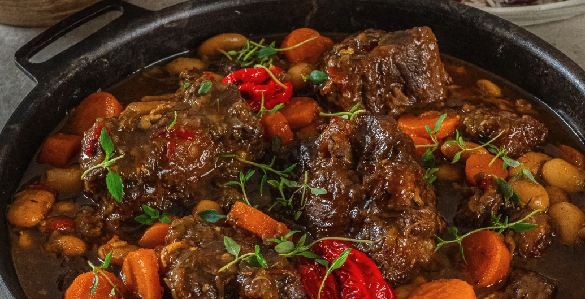

Oxsvansgryta

Desciption
Oxtail stew är en av de mest populära och omtyckta rätter i Jamaica
Ingredients
1,5 kg oxsvans
4 vitlökslyftor
1 msk riven ingefära
Putsa köttet
skär bort överflödigt fett
Pressa citron på köttet.